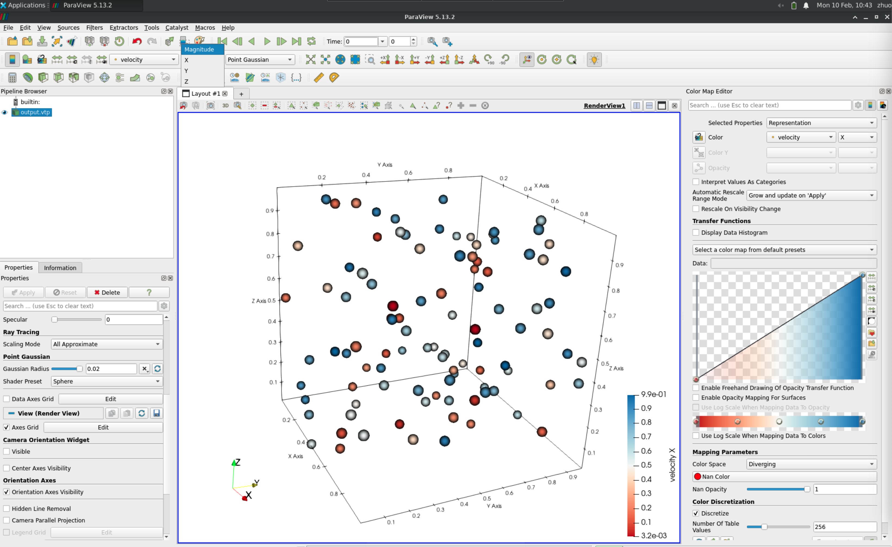

Particle to .vtp file
No matter how your particle data is stored, we only need you to convert it into a regular 2D array in Julia, where the number of rows represents the number of particles, and the number of columns is 2 (for 2D) or 3 (for 3D).
MaterialPointVisualizer.fastvtp — Methodfastvtp(coords; vtp_file="output.vtp", data::T=NamedTuple())Description:
Generates a .vtp file by passing custom fields.
Array particle to .vtp
particle_data = rand(100, 3)
vtpfile = joinpath(@__DIR__, "test.vtp")
fastvtp(particle_data, vtp_file=vtpfile)Add particle properties
particle_num = 100
particle_data = rand(particle_num, 3)
velocity = rand(particle_num, 3) # x, y, z
scalar = rand(particle_num)
vtpfile = joinpath(@__DIR__, "test.vtp")
fastvtp(particle_data, vtp_file=vtpfile, data=(velocity=velocity, scalar=scalar))If there is only one property, do not forget there should be a ,
fastvtp(particle_data, vtp_file=vtpfile, data=(scalar=scalar,))